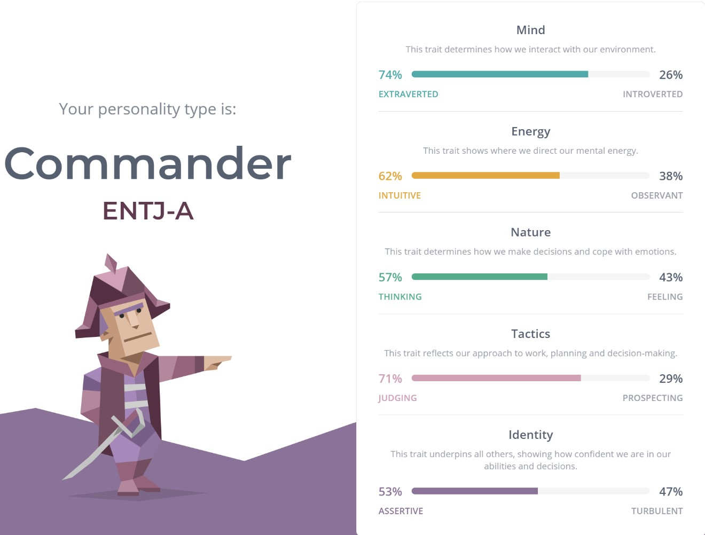
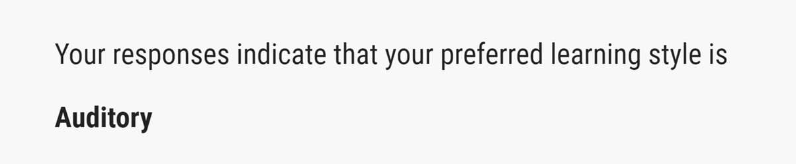
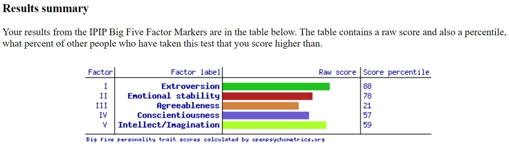

Personal Profile
Myers-Briggs Test
Learning Stle Test
Big Five Personality Test
The test results show me that I am a very extraverted individual who had control over my emotions, and I feel that would make me a very suitable person to work in or even lead groups. The fact that I also received an auditory response for my learning style allows me to determine that I work best through communication and listening to others, as this is a crucial step in work in a team. Having the ability to listen to your group mates is what makes you a leader and my 53% of assertiveness shows that I do have traits being the leader of the group. I also can control my emotions when working in a group which is an advantage, as shown through my 70% in emotional stability and 57% in thinking rather than feeling. This means I don’t let my emotions cloud my judgement in a group allowing the group to function better.